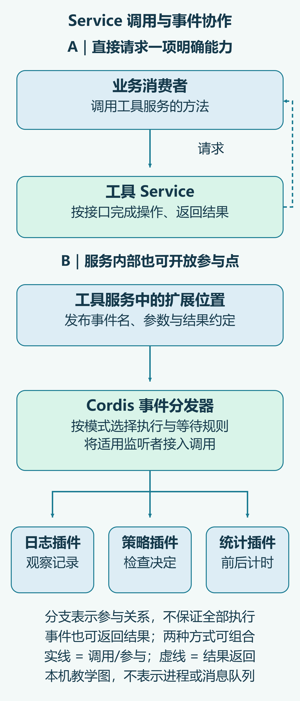
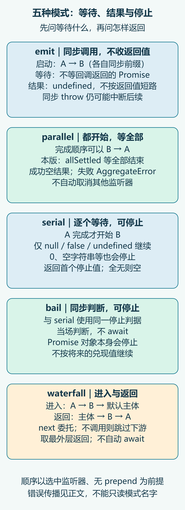
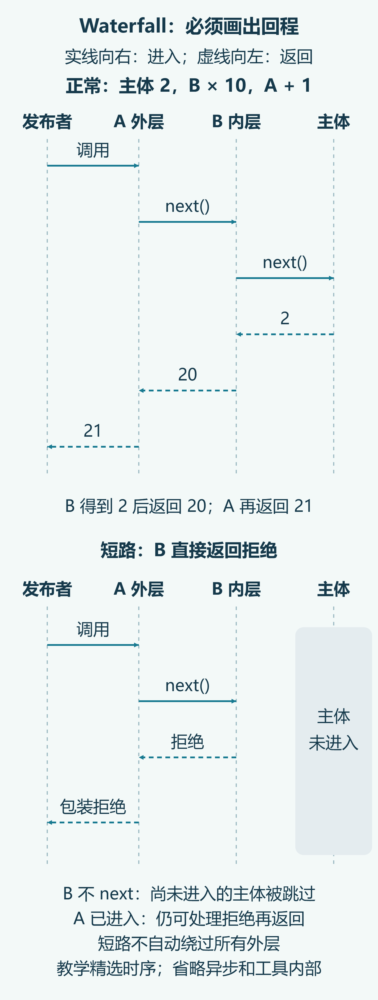

H06 作者审阅页 · 未发布。实际 LessonMarkdown 的静态渲染，折叠答案可展开；课程版本的复制交互已另经 React 挂载测试。图片在本页映射为相邻文件，不改变教材的 /course-media 路径。
事件驱动：Cordis 插件之间如何通信？
120～160 分钟（可分三段；实际学习时长待试读，安装等待另计）
工具还没执行，为什么五个插件都想参与？
H05 把项目助手的模型、工具、会话与日志分成了可组合的能力。现在 Agent Runtime 准备执行一次读取：日志想记录开始，权限策略想检查是否允许，工具插件负责真正读取，性能统计想知道花了多久。以后还可能增加审计插件。
一种做法是在运行器里逐个调用它们。下面是教学结构摘录，不是官方 API，也不执行真实读取：
await logs.record(call);
const decision = await policy.check(call);
if (!decision.allowed) return decision;
const result = await tools.execute(call);
metrics.record(result);
return result;这段代码本身没有错。固定职责、明确返回结果的合作，直接调用很清楚。困难出现在扩展者不断增加时：运行器必须知道所有参与方；新增审计又要改它；日志失败该不该阻止工具，统计是否必须等日志，策略拒绝后还要不要执行主体，都混在一串调用里。
事件系统给出另一种组织：负责这个动作的模块开放一个有契约的参与点，其他插件登记自己想做的事。发布方知道参与点的名字、参数和结果约定，无需逐个导入所有监听插件。事件分发器按约定把它们接起来。
但“需要扩展”不等于“都发一条通知就好”。日志可能只观察；策略必须有机会阻止；统计可能包住实际执行前后。若全用不等待的广播，策略还没查完，工具就可能已经开始。本课的问题是：同样叫事件，怎样选择执行、等待与返回的规则？
本课继续锁定 Commit f3803c96974ad4a94195fb97e5c637e9c2a3afe3，Cordis 4.0.6-alpha.1。官方事实绑定固定源码；course/* 是教学事件，业务只用内存 fixture；“我们的分析”表示工程判断。事件核心使用真实 Cordis，不重写一套相似系统冒充它。
图一先比较两条连接：一条借用具体能力，另一条开放共同参与点。

需要“执行这项明确能力并取得结果”，可以调用稳定的 Service 方法；需要“让可扩展的参与方观察、包装或按规则作决定”，可以开放事件。事件也能返回决策或结果，所以不能把二者粗分成“有返回值”与“没返回值”。一个 Service 方法内部就能分发事件；两种方式并不互斥。事件机制不会替代所有直接函数调用。
用六分钟找回回调、等待与返回
H05 的 Plugin 是宿主挂载的贡献，Service 是可借用的能力，Context 是当前插件的接入入口。本节新增的是：插件除了直接借用服务，还可以在同一参与点登记回调。回调函数就是“先把函数交出去，之后由约定的一方调用”，不是另一个线程。
Stage 4 4.1讲过 Tool Registry 管名单，Runtime 验证、执行与停止；4.3把写提议停在审批前。我们保留“模型提议不等于执行权”的边界。旧教材没有系统讲 Cordis 事件总线，不能把这节当成已经学过的内容；4.6 的测试 hook 也是用于注入故障的回调，不等于今天的事件机制。
读后面的代码，先记住三个区别：
- 普通函数执行到
return，返回它指定的值；没写返回值，通常得到undefined。 async函数返回 Promise；调用时先运行到第一次等待处，再把尚未完成的结果交还。返回false与返回“将来兑现为 false 的 Promise”，此刻不是同一个值。await等待它接到的 Promise，不会自动发现旁边所有异步工作。没有接住下游结果，就不会自动替你等完它。
同步说的是当前调用按代码先后推进；异步允许未完成的工作通过 Promise 等形式表示。并发表示多项工作在时间上重叠，本节常见的是各自等待时其他工作继续，不等于 JavaScript 同时在多个 CPU 线程上执行。顺序等待则是第一项完成，才开始下一项。
想深入再看：语法补课：callback、Promise 与 return next
ctx.on(name, callback) 把函数交给事件系统。写 () => { return 0; } 与 () => 0 都返回数值0；写 () => { console.log('done'); } 没有显式返回结果。
async () => false 返回 Promise，最终兑现为 false。await 得到兑现值后才能按 false 判断；不等待时看到的是 Promise 对象。本节用门闩 Promise 固定完成顺序，不用“睡几十毫秒应该够了”猜时序。
return next() 把下游结果传给上游；const value = await next(); return value; 则先等到结果，再传回。只写 await next(); 而不返回，在需要决策结果的事件中会把最终结果丢掉。它与“完全没调用 next”是两种错误。
H05 的 declare module 给编译器补类型，运行时会消失。本课给 Events 接口补监听签名，原理相同；它不会自动调用回调、登记监听器或写日志。旧课链接沿用原权限，以上复习足以继续，不要求离开本课。
谁发布，谁监听，谁决定怎样分发？
发布者到达某个参与点，把事件名和参数交给分发方法；例如工具系统拿着待执行请求，请策略参与。监听者是通过 ctx.on() 登记的回调，完成自己的观察或处理。分发器是 Cordis 的事件服务，按调用的方法决定启动顺序、等待与返回。它不替监听者编写策略，也不会凭事件名猜出怎样执行工具。
下面三段是教学用的不同动作，片段中的 ctx 已由宿主提供：
declare module '@deepseek-ai/cordis' {
interface Events { 'course/notice'(): void | Promise<void> }
}ctx.on('course/notice', () => { console.log('收到通知'); });ctx.emit('course/notice');第一段约定名字和回调形状；第二段登记实际函数；第三段才分发。本课把回调叫监听器，不表示必须等某个外部网络消息：这里通常是当前进程中的函数调用。只有声明，没有 on，就没有这个监听器；只有 on，没有分发，也不会凭空发生通知。
ctx.on 的真实注册入口在 288–301 行，对应的类型签名在 89–97 行。登记会关联当前插件；卸载与资源回收的详细机制留 H07。
一次分发先选出适用监听器，再执行，见 dispatch() 165–175 行。下面“注册顺序”都以本次选中的监听器、没有显式前置选项为前提；prepend: true 可以改变顺序，真实 Harness 也有作用域筛选。这里只认出这些前提，不计算 H08 的完整作用域树。
事件模式是公开契约的一部分。@mode 标记供文档和工程核查使用，声明合并不会让运行时自动挑选正确模式，也不会自动拒绝所有错用模式。实际行为由调用的 emit、parallel 等方法决定；不能把同一决策事件随意改用广播。
练习 A 从这里开始：先预测五种分发
每段先写下顺序和返回值，再展开预期。五段来自同一受测 modes.ts；文件开头统一导入 inContext。这个教学辅助函数创建全新真实 Context，完成后释放夹具，不增加业务分发规则。完整 support.ts、modes.ts 与运行命令在实践部分给出。
import { inContext } from './support.ts';emit：通知到了，不代表异步工作做完了
想象接待台同时通知日志和统计：“一次动作即将开始。”如果只需要同步记录一个内存标记，广播足够直观；若某项异步工作必须完成才能放行，就不能只靠这条通知。
技术上，ctx.emit(name, ...args) 同步逐个调用监听器，忽略它们的返回值，不等待返回的 Promise，也不收集它们。实际实现 189–196 行只是调用这一组回调；方法返回 undefined。
export async function emitExample() {
return inContext(async ctx => {
const trace: string[] = [], gate = Promise.withResolvers<void>();
let finished!: Promise<void>;
ctx.on('course/notice', () => {
trace.push('日志开始');
finished = gate.promise.then(() => { trace.push('日志完成'); });
return finished;
});
ctx.on('course/notice', () => { trace.push('统计'); });
const value = ctx.emit('course/notice');
trace.push('发布者继续');
const before = [...trace];
gate.resolve(); await finished; // 实验自己等；emit 没有等。
return { before, after: trace, returned: String(value) };
});
}这里门闩关闭时，“日志完成”不可能出现；第二个监听器和发布者却能继续。因此结果不依赖机器快慢。
想深入再看：emit 预期输出与原因
emit 返回时的 before 是 日志开始 → 统计 → 发布者继续；实验放开门闩并自己等待后，after 末尾才增加 日志完成；returned 为字符串 "undefined"，用于把实际空返回值显示进 JSON。
异步监听器已经被调用，并没有被忽略；被忽略的是它返回的 Promise。把 ctx.emit(...) 外面加一个 await，也不会让分发器收集这些 Promise。很短的异步工作偶尔先完成，不足以证明 emit 具有等待保证。
常见误解是“广播会在后台线程执行所有回调”。同步回调仍占当前调用；长计算也会拖住后续回调。适合同步观察或由监听器自行处理异步失败的通知；不适合要求异步检查完成后才能继续的决策。
parallel：都启动，再等每个人交卷
假设几项独立统计都要交齐，但相互没有先后依赖。可以让它们各自开始，最后一起等；其中一项慢，不必阻止其他项开始。
await ctx.parallel(name, ...args) 启动适用的监听器，等待所有结果；正常完成时不把各监听器业务返回值汇成数组，而是返回空结果。并发完成的顺序没有注册顺序保证。 本版本使用 Promise.allSettled，177–187 行：失败也要等其他监听器结束，再把失败原因汇为 AggregateError。
export async function parallelExample() {
return inContext(async ctx => {
const trace: string[] = [];
const a = Promise.withResolvers<void>(), b = Promise.withResolvers<void>();
const bDone = Promise.withResolvers<void>();
ctx.on('course/parallel', async () => { trace.push('A开始'); await a.promise; trace.push('A完成'); });
ctx.on('course/parallel', async () => { trace.push('B开始'); await b.promise; trace.push('B完成'); bDone.resolve(); });
const task = ctx.parallel('course/parallel');
trace.push('发布者等待');
b.resolve(); await bDone.promise; // 固定让 B 先完成，不猜定时器速度。
a.resolve(); const value = await task;
trace.push('发布者完成');
return { trace, returned: String(value) };
});
}想深入再看：parallel 预期输出与原因
顺序是 A开始 → B开始 → 发布者等待 → B完成 → A完成 → 发布者完成；returned 是 "undefined"。A、B 注册顺序决定本例开始调用的顺序；门闩故意让 B 先完成。发布者在 await task 之后才追加最后一项，证明两项都完成了。
并发不保证“耗时只等于最慢者”，因为同步前缀也要依次运行，还可能有共享资源竞争。若某监听器一直不结束，allSettled 也不会自动给它设置超时。不能用 parallel 表达“先保存，再基于刚保存的数据发送通知”的严格先后。
常见误解是把它当成 Promise.all 的快速失败语义。本版本会收集错误并等其他项结束，不自动取消它们。它适合可独立开展、又必须一同完成的异步参与；真实契约若要求顺序，就应换一种组织。
serial：每项都等，但遇到明确结果就停止
现在让几个处理方依次回答“这件事是否由我处理”。前一位说“没有答案”，再找下一位；有人给出答案，就不用继续问。这与“必须做完每一项任务”的流水账不同。
await ctx.serial(name, ...args) 按顺序调用并等待，每次拿到兑现值后判断是否提前停止。判据来自 isBailed()，7–15 行：只有 null、false、undefined 表示继续；其他值均会停止。这不是普通 truthy/falsy 判断，0、空字符串、NaN 也能停止。serial 的循环在 198–209 行。
export async function serialExample() {
return inContext(async ctx => {
const trace: string[] = [];
ctx.on('course/serial', async () => { trace.push('A开始'); await Promise.resolve(); trace.push('A完成'); return false; });
ctx.on('course/serial', async () => { trace.push('B'); return 0; });
ctx.on('course/serial', async () => { trace.push('C'); return undefined; });
const value = await ctx.serial('course/serial');
return { trace, value };
});
}想深入再看：serial 预期输出与原因
trace 是 A开始 → A完成 → B，value 为0，没有 C。A 返回的 Promise 先被等待，得到 false 才继续；B 返回的0不属于那三个继续值，所以停止。全体都只返回继续值时，最终没有胜出结果，返回 undefined。
若事件约定只是按序完成注册工作，监听器应按契约不返回意外的停止值；例如无意 return array.push(x) 会返回数组新长度，也可能让后续监听器不再执行。“serial 会等待每个监听器”必须补上“除非先出现停止值或错误”。
它适合要求顺序、允许首个有效响应胜出的异步协作。若任务要求无条件做完全部，不能只凭 serial 这个名字就保证这一点，还要读事件的返回约定与监听器代码。
bail：同步地找第一个有效响应
如果处理方都能立刻回答，例如几个同步解析器依次尝试识别一个命令，可以用 ctx.bail。它与 serial 使用同一个停止判据，区别是不等待 Promise。
bail() 211–222 行拿到回调当场返回的值就判断；首个停止值直接返回。下面辅助函数是 async，只为了等夹具收尾，里面的 bail 分发仍是同步的。
export async function bailExample() {
return inContext(ctx => {
const trace: string[] = [];
ctx.on('course/bail', () => { trace.push('A'); return false; });
ctx.on('course/bail', () => { trace.push('B'); return 0; });
ctx.on('course/bail', () => { trace.push('C'); return undefined; });
const value = ctx.bail('course/bail');
return { trace, value };
});
}想深入再看：bail 预期输出与一个危险反例
trace 是 A → B，value 为0，没有 C。A 的 false 继续，B 的0停止。
若错误地让一个监听器返回 Promise.resolve(false)，bail 此刻看到的是 Promise 对象，立刻以该对象停止。即使调用方之后 await 得到 false，也不会回去恢复分发、继续调用下一位。实验会直接核对返回对象身份与后续调用数；不能把“bail 是 serial 同步版本”误读成“它也会按将来的值决定”。
适合同步首个响应查询，不适合要等待异步检查再判断是否继续的任务。同步监听器抛错会直接传播，也不会自动把错误当成那三个继续值。
waterfall：先进去，再把结果包着带回来
项目助手现在需要在工具前后记录统计：执行前记开始，执行后读结果再记结束；策略还可能在中间拒绝。单向的 A→B→C 图无法表达“回来后继续做什么”。
Waterfall 在 Cordis 中是环绕式中间件：每个监听器拿到原有参数和一个 next()；调用它进入尚未执行的下游，下游返回后当前监听器可以继续处理结果。Middleware（中间件）就是放在默认处理外面的一层处理；continuation（续接函数）在这里具体就是 next，表示继续剩下的调用，不是什么自动流动的数据值。
严格定义是：ctx.waterfall(name, ...args, fallback) 把最后一个回调作为最内层默认逻辑，最外层监听器的返回值成为本次分发结果。框架本身不自动 await，但监听器可以返回 Promise，甚至异步可迭代的流；调用方必须按该事件契约消费结果。实现见 224–243 行。
先看两个监听器。输入是2，最内层也返回2；B乘10，A再加1。先预测它是21还是30。
export async function waterfallExample() {
return inContext(ctx => {
const trace: string[] = [];
ctx.on('course/value', (_input, next) => {
trace.push('A进入'); const x = next(); trace.push(`A得到${x}`); return x + 1;
});
ctx.on('course/value', (_input, next) => {
trace.push('B进入'); const y = next(); trace.push(`B得到${y}`); return y * 10;
});
const value = ctx.waterfall('course/value', 2, () => { trace.push('主体=2'); return 2; });
return { trace, value };
});
}图二先把五种规则放在一起作索引；Waterfall的回程下面再逐步拆开。它不代替各段代码的解释。

把两层 Waterfall 慢放一次
ctx.on 时只登记函数。真正分发后，按下面顺序推进；这里没有异步，也没有前置或作用域变化。
| 次序 | 当前执行位置 | 变量和值 | 为什么接下来去那里 |
|---|---|---|---|
| 1 | 分发器调用 A | A 的 input=2，x 还没有值 | A 尚未拿到下游结果 |
| 2 | A 调用 next()，进入 B | A 停在 x 的赋值，B 的 input 仍为2 | next 进入下一位，不是给 B 发送 A 的返回值 |
| 3 | B 调用 next()，进入默认主体 | B 停在 y 的赋值；主体返回2 | 监听器已用完，轮到最内层回调 |
| 4 | 回到 B 的 next() 之后 | y=2；B 返回 y×10=20 | 返回值沿普通调用栈回到 A |
| 5 | 回到 A 的 next() 之后 | x=20；A 返回 x+1=21 | A 包装完结果，返回给发布者 |
| 6 | 发布者取得最终结果 | value=21 | 它取得的是最外层返回值 |
想深入再看：waterfall 预期输出与输入的区别
trace 是 A进入 → B进入 → 主体=2 → B得到2 → A得到20，最终 value=21。两个监听器收到的 input 都是2；20和21是回程中的返回值。不是先把2加1，再把3送给 B 乘10。
next 不会把上一个监听器的返回值自动当下一位的入参。本例的 next 不接受替换参数；真实事件如约定共享请求对象，监听者可能通过该对象影响下游，但必须服从那个事件的可变性约定，不能推成“所有请求都能改”。Harness 的 Loop 构造模型请求就有冻结边界。
图三会在同一时间轴画出去程和回程；短路分支也要回到已经进入的外层。

不调用 next，究竟跳过了谁？
假设 B 是有决定权的策略：遇到不允许的动作，直接返回拒绝，而不调用 next。默认主体没有运行；但 A 先前已经进入，还在等自己的 next 返回。B 的拒绝会返回给 A，A 仍可记录、包装，甚至不正确地改变它。所以拒绝能否被上层改掉，是具体事件和插件的责任，不是“Waterfall”这个名字带来的不可篡改保证。
这也解释了官方教程的blocked 示例 109–138 行：内层返回阻止文本，外层仍把它转为大写。短路不是一条直接跳到发布者、绕过所有外层的箭头。
有意拒绝与观察插件漏调 next，在控制流上都不进入下游；区别在职责与返回契约。策略知道为何拒绝，并返回约定的决策；日志观察者却无意吞掉了默认行为，可能只返回 undefined。Waterfall 不用 isBailed 判据：即使返回 false 或 undefined，只要没有 next，也不会自动继续。 不要把 serial/bail 的三个继续值搬过来。
想深入再看：三层参考轨迹
进入顺序是 A→B→C→主体，返回顺序是主体→C→B→A。C拿到2返回5，B拿到5返回50，A拿到50返回51。完整轨迹为 A入、B入、C入、主体、C出、B出、A出。三个监听器收到的原始 input 仍各为2。
如果 C 返回拒绝而不委托，主体不运行；B和A仍在已进入的调用栈上。若错误地画成“C拒绝后直接返回发布者”，就会漏掉两个包装层可能产生的行为。自动测试核对这条三层轨迹，不只比较最后的51。
异步返回与异常：谁实际等了谁？
当下游返回 Promise，外层要处理最终结果，就应写 const result = await next()，然后再处理并 return。Waterfall 不会替一个遗漏 await 的监听器把 Promise 转成文本；也不会替一个遗漏 return 的监听器补回结果。
下面是本课真实 Cordis 测试采用的异步包装形式，course/async 约定返回 Promise：
ctx.on('course/async', async next => {
try { return await next(); }
catch { return 'recovered'; }
});下游若异步拒绝，await next() 使拒绝在这里进入 catch；若改成 try { return next(); } catch { ... }，同步 catch 不会等待那个 Promise 的拒绝。这个反例已实际运行，不能笼统地说“有 try 就兜住一切”。恢复值也必须符合事件约定，不能拿一串成功文字掩盖工具失败。
分发器本身没有替 Waterfall 吞掉异常。同步 throw 向外传播；Promise 拒绝沿异步返回传播；外层可以按职责处理。若返回的是 AsyncIterable，部分代码和异常要到迭代时才出现，不能把“拿到流对象”当成“已消费完结果”。后面的 llm/stream 正是这种返回形状。
同一个 next 调两次，会怎样？
不要套用其他中间件框架“第二次一定报错”的经验。本版本核心是下面这几行真实摘录 235–242 行：
const cbs = this.dispatch('waterfall', args)
const inner = args.pop()
const next = () => {
const cb = cbs.shift() ?? inner
return cb(...args)
}
args.push(next)
return next()同一次分发共享一个逐项取出的回调列表。每次调用 next 都再取下一项；用尽后就调用默认主体，没有“一次性调用”标记。实际实验中，A写 next() + next()，B写 return next()：B运行一次，默认主体运行两次，分别返回1与2，A得到3，没有自动报错。
更细一点：若 B 第一次短路，A 却再调一次 next，可能进入尚未消费的 C，而不是重新执行 B。异步并发地重复调用也共享这一个游标；测试用门闩验证了这一点，没有假设每次 next 都重建整条链。
因此正常协作的纪律是：每层至多委托一次，并正确回传结果。有意短路时返回约定结果，不委托。这个实验只证明事件核心没有一次性保护；实际工具或上层 API 可能另有约束，不能拿它推断所有真实工具都可重复执行。本课不会用真实写入演示这个风险。
监听器出错，五种模式不会自动给出同一种结果
| 模式 | 本版本的错误传播 | 对项目助手意味着什么 |
|---|---|---|
| emit | 同步throw直接传播，后面的回调可能不再调用；返回的拒绝Promise不被收集 | 通知不保证所有观察者一定收到；异步失败要由监听者自己明确处理 |
| parallel | 同步throw和异步拒绝都会收集；等全部settled后抛AggregateError | 不能假设一项失败就立刻返回，也不会自动取消其他项 |
| serial | 当前回调抛错或await拒绝，分发拒绝，后续不再继续 | 错误不是“没人回答”的继续值 |
| bail | 同步throw传播；返回Promise本身作为停止值 | 不适合用异步回调作判断；不会自动收集它将来的失败 |
| waterfall | 沿实际同步/Promise/迭代返回通道传播，外层可按约定处理 | 是否记录、拒绝或恢复取决于具体包装和调用方，不能默认吞错后放行 |
本课将 emit 异步失败放进独立 Node 子进程，以严格拒绝处理验证：先打印“emit 已返回”，随后因未处理拒绝退出1。这样错误不会污染其他实验。正确通知插件应在自己的异步工作边界处理并记录失败；不能指望发布者对一个 undefined 做 await 来接住它。
Harness 的某些业务事件另外做了错误容纳，例如最终结果观察通知；那是对应业务代码的额外措施，不是通用 emit 自动具备的性质。选择模式后仍需阅读分发处的 catch、返回检查与调用方。
在 Harness 中找到同一套语言
H03 的默认请求流程里，Agent 接纳输入、准备模型调用、分派工具和结算结果各有边界。现在来看哪些边界允许插件参与。以下五项都在锁定源码中存在；这里是源码与官方测试选读，未运行完整 Harness 的这些集成路径。本课运行的是前面的真实 Cordis 核心实验。
| 真实事件 | 声明与触发位置 | 输入、结果与适合的参与方式 |
|---|---|---|
| agent/pre-step | agent 的 runtime-types 338–350；默认循环 preStep 294–312 | Waterfall接收候选输入与运行位置，默认返回enter；参与者可先准备材料、包装消息或按契约reject。不是已经发出模型请求 |
| tools/pre-execute | tools事件 8–18；prepare 197–215 | Waterfall接收待执行请求，默认allow；策略可返回deny/ask/cancel等约定决策，协作标注者应委托。allow后仍有其他检查 |
| tools/execute | tools事件 19–29；dispatch 295–303 | Waterfall包住主体，next取得执行结果，适合计时等前后处理；默认回调是dispatchToolBody，不是allow决策 |
| tools/post-execute | tools事件 30–41；postExecute 486–499 | Waterfall处理已得到的结果，默认accept，参与者按契约改变或block结果；改成错误不代表已经发生的副作用被回滚 |
| llm/stream | LlmRuntime事件声明 64–75；streamWithRegistration 1174–1183 | Waterfall返回AsyncIterable，可包装流或按明确规则提供替代流；不是把整段文本依次传下去，也不是Promise |
this、carrier 或作用域分发对象在这些调用中还用于上下文和监听筛选；不要把额外的调用上下文误当成某个事件的第一项业务参数。本课实验没有加入完整 Agent 作用域，实际读代码必须保留这个限定。
看两个真实参与方。tool-jobs 的 285–290 行在 pre-execute 记下可见输出上限，然后 return next()；它增加上下文，不代替策略作最后决定，还显式用了 prepend。另一项session-checkpoint-policy 63–82 行在模型或工具边界参与检查点；其中 llm/stream 返回的是被包装的流。这说明等待、包装与具体返回形状都要跟随事件契约，不能写一个通用“记录后返回true”的监听器套所有事件。
选读官方拒绝测试 788–817 行：setup挂工具服务与执行器，监听器对echo直接返回deny，执行后断言错误结果及原因。再看pre-step拒绝测试 253–274 行：模型请求0、没有step/start，却有被blocked关闭的Turn。它们与H03的边界一致；只读到测试标题或文件路径还不够。
精读可以只选四个文件：先读 vendor/cordis/src/events.ts 的 isBailed→四种简单分发→waterfall，再读 core/tools/src/events.ts 的返回契约，接着只读 pipeline 的pre-execute分发小段，最后读 tool-jobs 的委托。这是阅读路线；运行时是发布方进入分发器、监听器按规则参与、结果回给发布方，不是文件阅读顺序就是调用顺序。其他表中位置是辅助核对，不要求本节通读各个大服务。
**我们的分析：**这些事件把可扩展的策略和包装接到明确边界，减少运行器直接认识每个插件的需要；代价是读者必须追查监听者、顺序、返回与异常。事件越多不意味着架构越好，关键结果如果只靠含糊通知传播，反而更难定位。
运行时扩展点，不自动等于持久会话事实
tools/pre-execute 是让插件参与当前检查的运行时事件；tool/call、tool/result 是会话里记录的事实，名字甚至不是同一套。ctx.on 和一次分发不会自动把通知变成 SessionEvent，也没有自动持久队列或跨进程重放。
session/event 则是接受会话事实之后的观察通知；Session实际commit 892–911 行先更新内存日志，再发布通知。它仍不能单独证明磁盘flush。也不能只按前缀分类：H03已见过的agent/inbox/spliced写入点就是agent前缀中的会话事实。应看声明、生产点和记录位置，而非背“所有事件都是日志”。
把三项实践跑起来
新建独立空目录 h06-events-lab，保存下面四份完整程序。它们只处理固定内存数据，不读个人README、Home或凭据，不调用模型或真实工具。support.ts 中的事件名与数据格式是教学设计；inContext 使用真实 Cordis。不要把这些类型导入官方 Harness 当作生产事件。
想深入再看：完整公共准备：support.ts
// H06 教学事件；真实 Cordis 运行时，虚构业务数据。名称不属于 Harness 官方 API。
import { Context } from '@deepseek-ai/cordis';
export type Request = { tool: string; allowed: boolean };
export type Reply = { ok: boolean; text: string };
declare module '@deepseek-ai/cordis' {
interface Events {
'course/notice'(): void | Promise<void>;
'course/parallel'(): void | Promise<void>;
'course/serial'(): Promise<false | number | undefined>;
'course/bail'(): false | number | undefined;
'course/value'(input: number, next: () => number): number;
'course/async'(next: () => Promise<string>): Promise<string>;
// 故意容许 undefined，便于观察漏 next/return；真实决策接口应更严格。
'course/request'(req: Request, next: () => Promise<Reply | undefined>): Promise<Reply | undefined>;
'course/stream'(next: () => AsyncIterable<string>): AsyncIterable<string>;
}
}
export async function inContext<T>(work: (ctx: Context) => T | Promise<T>): Promise<T> {
const ctx = new Context();
try { return await work(ctx); }
finally { await ctx.fiber.dispose(); } // 夹具收尾；资源回收机制留 H07。
}想深入再看：练习 A 完整程序：modes.ts
import { inContext } from './support.ts';
// snippet:emit:start
export async function emitExample() {
return inContext(async ctx => {
const trace: string[] = [], gate = Promise.withResolvers<void>();
let finished!: Promise<void>;
ctx.on('course/notice', () => {
trace.push('日志开始');
finished = gate.promise.then(() => { trace.push('日志完成'); });
return finished;
});
ctx.on('course/notice', () => { trace.push('统计'); });
const value = ctx.emit('course/notice');
trace.push('发布者继续');
const before = [...trace];
gate.resolve(); await finished; // 实验自己等；emit 没有等。
return { before, after: trace, returned: String(value) };
});
}
// snippet:emit:end
// snippet:parallel:start
export async function parallelExample() {
return inContext(async ctx => {
const trace: string[] = [];
const a = Promise.withResolvers<void>(), b = Promise.withResolvers<void>();
const bDone = Promise.withResolvers<void>();
ctx.on('course/parallel', async () => { trace.push('A开始'); await a.promise; trace.push('A完成'); });
ctx.on('course/parallel', async () => { trace.push('B开始'); await b.promise; trace.push('B完成'); bDone.resolve(); });
const task = ctx.parallel('course/parallel');
trace.push('发布者等待');
b.resolve(); await bDone.promise; // 固定让 B 先完成，不猜定时器速度。
a.resolve(); const value = await task;
trace.push('发布者完成');
return { trace, returned: String(value) };
});
}
// snippet:parallel:end
// snippet:serial:start
export async function serialExample() {
return inContext(async ctx => {
const trace: string[] = [];
ctx.on('course/serial', async () => { trace.push('A开始'); await Promise.resolve(); trace.push('A完成'); return false; });
ctx.on('course/serial', async () => { trace.push('B'); return 0; });
ctx.on('course/serial', async () => { trace.push('C'); return undefined; });
const value = await ctx.serial('course/serial');
return { trace, value };
});
}
// snippet:serial:end
// snippet:bail:start
export async function bailExample() {
return inContext(ctx => {
const trace: string[] = [];
ctx.on('course/bail', () => { trace.push('A'); return false; });
ctx.on('course/bail', () => { trace.push('B'); return 0; });
ctx.on('course/bail', () => { trace.push('C'); return undefined; });
const value = ctx.bail('course/bail');
return { trace, value };
});
}
// snippet:bail:end
// snippet:waterfall:start
export async function waterfallExample() {
return inContext(ctx => {
const trace: string[] = [];
ctx.on('course/value', (_input, next) => {
trace.push('A进入'); const x = next(); trace.push(`A得到${x}`); return x + 1;
});
ctx.on('course/value', (_input, next) => {
trace.push('B进入'); const y = next(); trace.push(`B得到${y}`); return y * 10;
});
const value = ctx.waterfall('course/value', 2, () => { trace.push('主体=2'); return 2; });
return { trace, value };
});
}
// snippet:waterfall:end练习 A：核对预测，并让一个错误被测试发现
想深入再看：练习 A 详细答案
emit不等异步日志，before不含日志完成；parallel两项先开始，受控让B先结束但发布者最后等齐。serial的A完成后才轮到B，B的0停止C；bail同步A→B，也在0停止；waterfall是A进入、B进入、主体、B得到2、A得到20，最终21。
serial里的0改false，会让C也执行，且全部无胜出结果时得到undefined。自动测试仍按原题预期，所以错误副本应失败；先解释变化，不去改断言。bail返回Promise.resolve(false)时，先拿到Promise对象就停止，之后兑现false不会继续分发。两者分别改变了“等待后的值”与“当场的对象”。
本课作者runner自动制造第一项错误，要求非零退出；还逐个在真实serial/bail上核对null、false、undefined、0、空字符串、NaN、true、对象、数组和0n，避免仅凭一句falsy规则误判。
练习 B：让三个插件包住一次请求
allowed 是宿主夹具给出的固定布尔值，不模拟真实用户身份或审批凭据。工具主体只返回FIXTURE并增加计数，不读磁盘；日志、策略、统计是真正通过 ctx.plugin 挂载的三个教学插件。
想深入再看：练习 B 完整程序：request.ts
import { inContext, type Reply } from './support.ts';
import type { Context } from '@deepseek-ai/cordis';
export type Case = 'allow' | 'deny' | 'lost-next' | 'lost-return';
export async function runRequest(kind: Case) {
return inContext(async ctx => {
const trace: string[] = []; let bodyCalls = 0;
await ctx.plugin({ name: 'log', apply(inner: Context) {
inner.on('course/request', async (_req, next) => {
trace.push('日志进入');
if (kind === 'lost-next') return; // 错误观察者：没有委托。
const result = await next();
trace.push(`日志收到:${result?.text}`);
if (kind === 'lost-return') return; // 下游已执行，但结果丢了。
return result && { ...result, text: `外层(${result.text})` };
});
} });
await ctx.plugin({ name: 'policy', apply(inner: Context) {
inner.on('course/request', async (req, next) => {
trace.push('策略检查');
if (!req.allowed) return { ok: false, text: 'DENIED' };
return next();
});
} });
await ctx.plugin({ name: 'metrics', apply(inner: Context) {
inner.on('course/request', async (_req, next) => {
trace.push('统计进入');
const result = await next();
trace.push('统计退出'); return result;
});
} });
const result: Reply | undefined = await ctx.waterfall('course/request',
{ tool: 'read_fixture', allowed: kind !== 'deny' }, async () => {
bodyCalls++; trace.push('工具主体'); return { ok: true, text: 'FIXTURE' };
});
return { trace, bodyCalls, result: result ?? null };
});
}想深入再看：练习 B 详细答案
allow：日志进入→策略检查→统计进入→工具主体→统计退出→日志收到FIXTURE；主体1次，返回 {ok:true,text:'外层(FIXTURE)'}。
deny：日志进入→策略检查→日志收到DENIED；主体0次，统计未进入，返回 {ok:false,text:'外层(DENIED)'}。策略拒绝后，已进入的日志层仍继续，包装保留ok:false，没有把拒绝改成成功。
lost-next：只有日志进入；主体0次，策略与统计都没执行，最终原始undefined。为了JSON能明确显示，本实验把最终undefined显示为null。它不是一种官方拒绝决策。
lost-return：正常链条已经走完，主体1次，日志也看见FIXTURE，但它未回传结果，最后同样显示null。返回值丢失不能推断动作没发生；生产接口应采用清楚的返回约定与验证。公共类型特意容许undefined是为了观察这个错误，不是推荐真实决策接口放宽类型。
练习 C：把真实事件定位交给另一位同学复查
想深入再看：练习 C 详细参考答案
声明：packages/core/tools/src/events.ts:8–18，Events扩展把它标为waterfall，输入ToolExecution，next与监听器均按Promise约定。
分发：packages/core/tools/src/pipeline.ts:197–215，ToolExecutionPipeline.prepare 等待waterfall，默认回调返回Promise兑现的 {kind:'allow'}；随后还处理ask、取消、拒绝及guard等条件，不是事件返回就直接执行工具。
消费者：packages/jobs/tool-jobs/src/index.ts:285–290，先按请求计算输出上限并登记到WeakMap，最后return next，并显式prepend。它保留下游决策，不能把记录上限误解成允许工具执行。它的普通副作用是内存元数据标注，不是SessionEvent写入。
测试：packages/core/tools/tests/tools.spec.ts:788–817 的permission pattern用例，挂服务与工具，给echo返回deny，执行后检查isError、拒绝文本和错误原因。它还看事后观察到的结果冻结状态。本课只选读该官方集成测试，未运行；不能用本课B的内存计数冒充它的执行证据。
机器参考位置另存 lab/locate-reference.json，作者源码检查核字节、范围、实际语句及测试断言。H06不展开完整审批路由、guard与post结果归一化；那是H14及相关后课的任务。
运行与自动化验收
想深入再看：统一运行入口：demo.ts
import { emitExample, parallelExample, serialExample, bailExample, waterfallExample } from './modes.ts';
import { runRequest, type Case } from './request.ts';
for (const run of [emitExample, parallelExample, serialExample, bailExample, waterfallExample]) {
console.log(run.name, JSON.stringify(await run()));
}
for (const kind of ['allow', 'deny', 'lost-next', 'lost-return'] as Case[]) {
console.log(kind, JSON.stringify(await runRequest(kind)));
}已有独立、固定Commit且依赖准备好的Harness checkout时，将四文件和随课 events.test.ts、error-worker.ts 放进新建的 tmp/h06-events-lab。Node沿用官方 >=24.9.0，不在AI Foundry根安装Harness依赖。在这个新目录运行：
node ../../node_modules/tsx/dist/cli.mjs --tsconfig ../../tsconfig.base.json demo.ts
node ../../node_modules/tsx/dist/cli.mjs --tsconfig ../../tsconfig.base.json --test events.test.tsdemo按五种模式及四条请求路径输出JSON，对照上面的详细答案；测试正常应27项通过。完整测试和故障子进程文件随交付保留，正文不用复制整份测试来代替解释。
作者复验在AI Foundry根运行以下入口。它在新OS临时目录复制夹具，以路径映射加载锁定vendor Cordis/Cosmokit，运行前核字节，不需要启动完整Harness：
node docs/deepseek-harness-v2/h06/scripts/run-labs.mjs它除27项测试外，还检查错误答案非零、emit异步拒绝子进程预期失败、事件参数类型负例和声明擦除；临时目录保留，不递归清理。类型测试按Cordis包自身编译选项生成真实声明，再严格检查课程消费方。类型通过与真实运行分别记账。
四道题，把分发规则说成工程判断
想深入再看：思考 1 参考答案
固定纯函数可以直接调用，明确的工具能力可经Service方法调用，可扩展的观察方可通过事件参与。事件也能提供决策与包装结果，但它增加监听来源、顺序和失败传播的追踪成本，不能因此替换所有稳定调用。
服务方法内部可开放事件，两种方式解决的层次不同。选择应看谁拥有操作、消费者要什么结果、是否需要开放参与，而不是看哪种写法更像框架。发布者仍要遵守返回契约并承担业务责任。
想深入再看：思考 2 参考答案
不能。两个监听器都可能已经开始，写入不因检查稍后失败而自动撤销；等齐只决定调用方何时拿到完成或错误，不建立准入先后。该版本parallel使用allSettled，等其他项结束后才汇总失败，也不自动取消它们。
应把检查与执行放进明确受控的调用结构，或使用有清楚决策/委托约定的参与点，并按实际工具边界落实规则。仅换成serial也不自动获得权限安全，仍要解释返回值、拒绝分支和执行位置。
想深入再看：思考 3 参考答案
漏next会让尚未进入的策略、统计和默认主体都不执行；漏return可能已经调用了下游，主体也发生过，只是结果没有回传。要看完整轨迹和主体次数，不能只看最后undefined。B的lost-next与lost-return分别是0次和1次。
本版本next共享剩余回调游标，没有自动一次性保护。多调一次可能跳到尚未消费的监听器，或再次调用默认主体，不会自动帮你修复结果丢失。正常观察层至多委托一次并回传；恢复真实副作用必须另有业务证据，不能靠再发一次补救。
想深入再看：思考 4 参考答案
技术上都能拿到回调与next，职责却不同。观察层应正确委托、保存返回契约并处理自己的失败；有权决定的策略层才按明确条件返回约定拒绝。登记一个监听器不等于获得业务授权，模型自然语言也不能授予这种权力。
拒绝会跳过尚未进入的下游，已经进入的外层仍可能记录或包装结果，甚至错误地改写。因此插件组合与事件契约还要规定谁能改变决定、如何保留关键字段，并验证边界。Waterfall本身不是不可绕过的安全机制。
下一问：登记过的监听器，最终归谁管理？
回到项目助手，直接Service调用仍负责明确能力；事件把可扩展的观察、顺序协作和环绕决策放到有约定的参与点。emit不等返回的异步工作，parallel等并发项都结束，serial顺序等待并按精确判据停止，bail同步判断，waterfall则由next与返回形成去程和回程。
现在要能独立指出：事件类型写在哪里，谁登记监听器，谁触发，发布者怎样得到结果，短路省略了谁，错误走哪条返回通道。还要保留“运行时事件不自动持久化”与“框架分发不代替授权”的边界。
H07接着只问：插件卸载或依赖变化后，曾经登记的监听器怎样撤销，正在进行的工作和资源由谁收尾？本课只用finally释放实验夹具，没有展开Fiber/Effect回收。H08的Profile/Bundle/Patch组装、H14的完整工具流水线也保留到各自课时。本轮到事件分发与可运行证据结束。